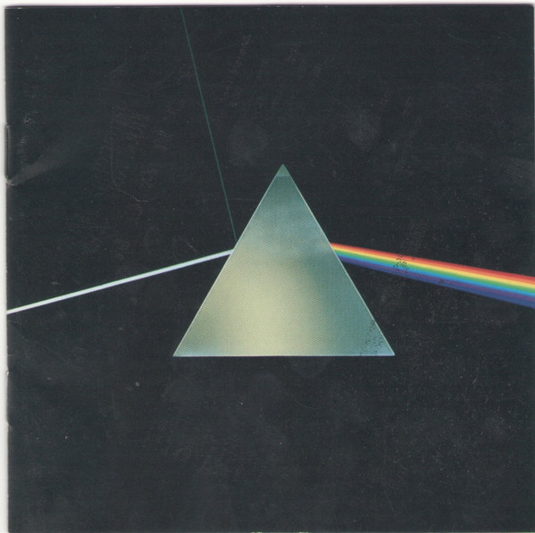

CD
Dark Side Of The Moon
Pink Floyd
Media VG+
Media: VG+ · Sleeve: VG+
—
Personal
Discogs SuggestedCA$15.56
Discogs MedianCA$15.56
Discogs HighCA$15.56
- Physical Copy ID
- BB-CD-2350
- Year
- 1973
- Label
- Capitol Records
- Catalog #
- CDP 0777 7 46001 2 5
- Country
- USUS
- Genre / Style
- Rock · Psychedelic Rock, Prog Rock
16